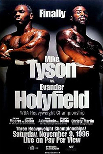

Kegiatan Mike Tyson
|  | Kegiatan Akhir Tahun Bersama Teman Mike Tyson vs. Evander Holyfield, billed as Finally, was a professional boxing match fought between Evander Holyfield and Mike Tyson for the World Boxing Association heavyweight championship on November 9, 1996 at the MGM Grand Garden Arena in Paradise, Nevada. The bout was Tyson's first defense of the WBA title that he had won from Bruce Seldon on September 7 of that year.The referee officiating the fight was Mitch Halpern. The fight was promoted by Don King Productions and carried on pay-per-view by Showtime. The bout was the first fight pitting the two boxers against each other and it would be followed up with a controversial rematch. |
| Balik ke halaman utama | |